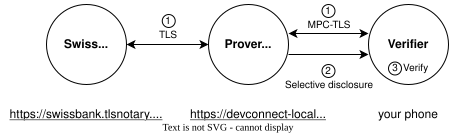

Can you help us verify the EF's bank balance without having access yourself?

Network: TLSNotary
Password: tlsnotary
Click the verify button and watch the cryptographic proof being generated!
How it works:
Your browser connects to our prover who proves the bank balance via TLSNotary's MPC-TLS protocol, giving you cryptographic guarantees of authenticity.
You get a proof that the EF's Swiss Bank balance is genuine. The prover only reveals what it wants to reveal through selective disclosure.